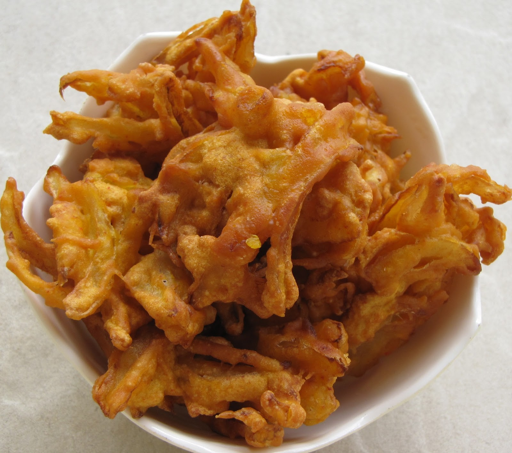

South Indian Recipes
South Indian RecipesBreakfast
Rice items
Sambars and Curry
Sweets
Snacks
 Onion pakoda, a popular South Indian snack, has a rich history and a delectable taste that has made it a beloved treat across the region. Commonly known as "vengaya pakoda" in Tamil and "ulli vada" in Malayalam, this crispy and flavorful dish is a staple in South Indian households and street food stalls. The history of onion pakoda can be traced back to the culinary traditions of South India, where the use of onions in various dishes has been prevalent for centuries. Onions, with their distinctive pungent flavor, add a unique and savory element to the snack. The preparation involves slicing onions thinly and mixing them with a spiced gram flour (besan) batter, which typically includes ingredients such as chili powder, coriander, cumin, and sometimes rice flour for added crispiness. The batter-coated onion slices are deep-fried until golden brown, resulting in a crispy exterior and a soft, flavorful interior. The magic of onion pakoda lies in the perfect blend of spices, creating a harmonious balance of heat and aromatic flavors. The snack is often served with mint chutney or tamarind sauce, enhancing its taste with tangy and spicy notes. Onion pakoda is not only a popular homemade snack but also a common street food item, enjoyed during rainy days or as an accompaniment to a hot cup of chai. Its affordability, simplicity in preparation, and delightful taste make it a favorite among people of all ages. The snack has transcended regional boundaries, finding its place in the hearts and palates of food enthusiasts around the world, showcasing the diverse and rich culinary heritage of South India.
Onion pakoda, a popular South Indian snack, has a rich history and a delectable taste that has made it a beloved treat across the region. Commonly known as "vengaya pakoda" in Tamil and "ulli vada" in Malayalam, this crispy and flavorful dish is a staple in South Indian households and street food stalls. The history of onion pakoda can be traced back to the culinary traditions of South India, where the use of onions in various dishes has been prevalent for centuries. Onions, with their distinctive pungent flavor, add a unique and savory element to the snack. The preparation involves slicing onions thinly and mixing them with a spiced gram flour (besan) batter, which typically includes ingredients such as chili powder, coriander, cumin, and sometimes rice flour for added crispiness. The batter-coated onion slices are deep-fried until golden brown, resulting in a crispy exterior and a soft, flavorful interior. The magic of onion pakoda lies in the perfect blend of spices, creating a harmonious balance of heat and aromatic flavors. The snack is often served with mint chutney or tamarind sauce, enhancing its taste with tangy and spicy notes. Onion pakoda is not only a popular homemade snack but also a common street food item, enjoyed during rainy days or as an accompaniment to a hot cup of chai. Its affordability, simplicity in preparation, and delightful taste make it a favorite among people of all ages. The snack has transcended regional boundaries, finding its place in the hearts and palates of food enthusiasts around the world, showcasing the diverse and rich culinary heritage of South India.
